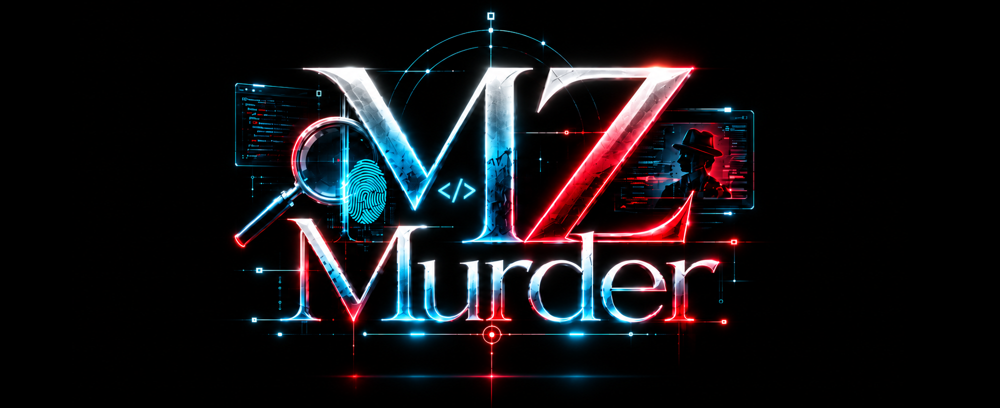

キャラクター選択や投票はプラグインコマンドが必須？
いいえ。好きなようにイベントで作っても大丈夫です。プラグインコマンドは用意された画面と処理を使う方法です。独自に作る場合は、PC番号の設定や参加者間の同期、投票結果の保存など、作品に必要な処理もイベント側で用意してください。

RPGツクールMZで、マルチプレイのマーダーミステリーを作ろう！
MZ MurderはRPGツクールMZを基盤にした、オンラインのマーダーミステリー向けプラグイン群です。1マップを1シーンとして構成し、スイッチ・変数、カード、タイマーなどを同期します。HOや資料はメニューに登録し、タブとして描画します。ゲーム内部の画面解像度は1920×1080です。
聞いたことがない方は戸惑うかもしれませんが、手順通り実行すれば問題ありません。Firebaseコンソールで、この作品専用のFirebaseプロジェクトを作ります。 Authenticationの匿名認証 と Realtime Database を使用します。Cloud Firestoreは使用しません。
apiKey と authDomain です。後でRealtime Databaseを作成してから databaseURL も取得します。アプリ登録後も「プロジェクトの設定」→「全般」→「マイアプリ」→「構成」で確認できます。参考：Firebase公式：Webアプリを追加する、Firebase公式：設定オブジェクト
FirebaseSync.js が匿名ログインを行います。プレイヤーがメールアドレスを入力する画面は不要です。firebaseio.com または firebasedatabase.app で終わります。推測して入力せず、コンソールに表示されたURLをコピーします。参考：Firebase公式：Realtime Databaseの導入
このプラグインは active_rooms の全体を参照して空室を掃除し、各ルームのデータを読み書きします。以下は制作者が管理するテスト環境用の最小例です。「ルール」タブに貼り付けて公開します。
{
"rules": {
"active_rooms": {
".read": "auth != null",
".write": "auth != null"
}
}
}apiKey はパスワードではありませんが、サービスアカウントの秘密鍵はゲームに含めないでください。参考：Firebase公式：認証情報を使うルール、Firebase公式：設定値の扱い
| Firebaseの値 | 取得場所 | プラグイン側 |
|---|---|---|
apiKey | Webアプリの構成 | FirebaseSync → apiKey |
authDomain | Webアプリの構成 | FirebaseSync → authDomain |
databaseURL | Realtime Databaseのデータ画面、または作成後のWebアプリ構成 | FirebaseSync → databaseURL |
このデモに入っているFirebase接続値はデモ用です。新しい作品では自分のプロジェクトの値へ差し替えます。
js/plugins/ に、末尾の「配布対象プラグイン一覧」にある32個のJavaScriptファイルをコピーします。img/pictures/、img/icon/、img/info/ に、資料HTMLを html/ に配置します。必要な音声もコピーします。ルビ辞書や資料の表示順を使う場合は data/ruby_dict.csv と data/sort_order.txt も配置します。ファイル名とフォルダ階層は各プラグインの設定値に合わせます。js/plugins.js を参考にしてください。「ツール」→「プラグイン管理」で、コピーしたプラグインを追加し、すべてONにします。読み込み順はデモの js/plugins.js を参考に設定してください。末尾の一覧は探しやすいよう名前順に掲載しています。
主要なプラグインは FirebaseSync、CharacterSelection、SyncMapTransfer、CardPicture、EnhancedPicture、TabUI、ContentRenderer、SideMenu です。配布対象の全32個の役割は末尾の一覧を参照してください。
ConfirmWindowClose.js を追加し、プラグイン管理でONにします。デモでは DisableFunction の直後に読み込みます。confirmMessage に確認文を設定します。初期値は「ゲームを終了しますか？」です。ブラウザ版でページを閉じるときは DisableFunction がブラウザ標準の確認を表示します。ConfirmWindowCloseの設定項目も参照してください。
PluginManager.parameters(...) の参照先と一致しなくなります。コピー時はファイル名を維持してください。「データベース」→「アクター」で、作品に必要なPC、GM、NPCのキャラクターを作成します。アクターIDはキャラクター選択と投票で使われる番号なので、配役を決めてから設定してください。
1 から CharacterSelection.totalPlayers まで連続して登録します。GMも選択画面の人数に含まれます。名前・二つ名・職業・顔グラフィックなど、表示に使う情報を設定します。FirebaseSync.defaultGmPcId に設定します。デモは totalPlayers=6、GMのアクターIDは 6 です。totalPlayers より後に配置します。投票画面はアクターの名前と顔グラフィックを表示できます。プラグイン管理で FirebaseSync のパラメータを開き、手順1で控えた接続情報と、作品で使用するスイッチ・変数の番号を設定します。
| パラメータ | 役割 | 設定値・デモ例 |
|---|---|---|
apiKey / authDomain / databaseURL | 手順1で取得したFirebase WebアプリとRealtime Databaseの接続情報 | 自分のFirebaseプロジェクトの値 |
syncSwitchStart / syncSwitchEnd | 全員で共有するスイッチ番号の範囲 | 1～100 |
syncVariableStart / syncVariableEnd | 全員で共有する変数番号の範囲 | 1～100 |
roomIdVariable | ルームIDを格納する変数 | 118 |
pcIdVar | PCのIDを格納する変数 | 101 |
userUidVar | この端末の匿名認証UIDを格納する変数 | 102 |
creatorSwitchId | ルーム作成者かどうかの判定に使用するスイッチ番号 | 101 |
gmOnlySwitchId | GMかどうかの判定に使用するスイッチ番号 | 101 |
defaultGmPcId | GMとして扱うPC(アクター)番号 | 6 |
maxMembers | ルームへの最大入室人数。GMを含むプレイ人数以上にすること。 | 6 |
lockSwitchesId | 同期処理の書き込み制御に使うスイッチ番号 | 0 |
lockVariablesId | 同期処理の書き込み制御に使う変数番号 | 0 |
creatorSwitchId、gmOnlySwitchId、lockVariablesIdには共有範囲外のスイッチを、pcIdVar、userUidVar、roomIdVariable、lockVariablesIdには共有範囲外の変数を指定します。基本的にイベント等で上書きしないようにしてください。
開始位置を初期マップに設定し、自動実行イベントを1つ置きます。デモの Map001 は次の流れです。
SyncMapTransfer → 一斉移動の予約 で、選択完了後のマップを指定します。このコマンドはGM権限のある端末だけが実行します。CharacterSelection → キャラクター選択処理の実行 を呼び出します。completionCommonEventId に、完了後のコモンイベントを設定します。デモはコモンイベント1です。SyncMapTransfer → 完了報告 を置きます。デモでは、その前に 現在のPC参加者数を固定する も呼んでいます。CharacterSelection.open は呼び出し元イベントを待機させません。選択完了後に実行する処理を同じイベントの直後へ並べず、完了用コモンイベントかスイッチ条件の別イベントに置いてください。移動予約を先に確定させるため、完了報告までに十分な時間を取ります。選択画面へ入った参加者はPCを選び、開始ボタンを押します。members の中でPC番号が登録された人の完了報告が揃うと、観戦者も予約済みのマップへ移動します。
CharacterSelection のプラグインパラメータで調整します。画像ファイルは img/pictures/ に置き、拡張子を除いた名前で選択します。
選択したPC番号は FirebaseSync.pcIdVar に保存されます。GM用PC番号は FirebaseSync.defaultGmPcId で指定し、アクターIDと選択画面の表示範囲に合わせます。
| 項目 | 調整内容 |
|---|---|
startUnselected | ONなら部屋の作成者を含む全員がキャラクター未選択で開始します。OFFなら作成者のGMキャラクターを初期選択します。デモ設定はOFFです。 |
totalPlayers、allowGmChange、allowEarlyStartSwitchId、autoStartWhenReady | 選択画面に表示するキャラクター数、GM変更、人数不足時の開始、自動開始を設定します。totalPlayers は FirebaseSync.maxMembers とは別です。allowEarlyStartSwitchId は名前に「Id」がありますが、実装上は真偽値です。 |
backgroundImage、pcImages、isSingleFace | 背景、PCごとの画像、顔グラフィックの1ファイル1キャラ扱いを設定します。PC画像を省略するとアクターの顔グラフィックを使います。 |
imageWidth / imageHeight、columns、firstX / firstY、spacingX / spacingY | 画像の寸法、列数、先頭位置、画像間隔を1920×1080の画面座標で指定します。 |
textLine1～3、nameOffsetX / Y、nameAlign | 名前・二つ名・職業の表示行と位置を指定します。 |
cursorImage、cursorOffsetX / Y、nextButtonImage、nextButtonX / Y / Width / Height | 選択マークと開始ボタンの画像・位置・大きさを指定します。 |
roomIdX / roomIdY、completionCommonEventId | ルームIDの表示位置と、選択完了後のイベントを指定します。 |
このデモではPC画像を省略し、各アクターの顔グラフィックを使っています。自分のPCの選択マークには Thunb、開始ボタンには Button/Game_Start を指定しています。
導入、ハンドアウト確認、読み合わせ、調査・議論、投票、エンディングなどを別マップに分けます。各マップの自動実行や並列イベントに、文章、演出、資料配布、タイマー、分岐を配置します。デモでは Map004 がカードとトークンの盤面、Map005 と Map008 が投票処理の例です。
SyncMapTransfer → 一斉移動の予約 を実行し、次のマップを指定します。SyncMapTransfer → 完了報告 を実行します。PC未選択の観戦者は完了報告の対象外です。members にいるPC登録者の報告が揃うと、観戦者を含む全員を予約先へ移します。固定人数で待つ場合は、GM側で 現在のPC参加者数を固定する を使います。独自の分岐がある場合も、次のマップを決めてから完了報告を行います。単独のイベントコマンド「場所移動」で全員を移動させる構成にはしません。再参加時の補助には 保存されたマップへ移動（自分のみ） があります。
FloatingMessageLog：ツクールの「文章の表示」を重ねて表示し、ログと文章同期を扱います。TimerEx：秒数、終了時スイッチ、SE、表示位置を指定する同期タイマーです。SideMenu + TabUI + ContentRenderer：資料の登録、タブ表示、HTML・画像描画を行います。例えば html/HO-1.htm はID HO-1 として「情報の追加」で登録します。CulpritVote：投票画面を生成して各PCの投票を同期します。全員の投票後に「投票結果を取得」を実行し、最多票PC番号や票数などを指定したゲーム変数へ格納します。同票判定はスイッチにも出力できます。対象PCを配列変数から指定するコマンドもあります。ContentRenderer が対応する範囲で資料を作り、実機で表示を確認してください。使えるタグと挙動は ContentRendererのHTMLガイド にまとめています。本マニュアル自体は通常のブラウザで開く一般的なHTMLです。img/pictures/ に置きます。CardPicture → ピクチャのカード化 を実行し、同じピクチャ番号、表面画像、初期表示、ドラッグ可否、表裏のキャプションなどを設定します。CardPicture → カードの表示状態を変更 で非表示・公開・個人閲覧を切り替え、CardPicture → カードの属性を変更 で操作可能なPC、閲覧時スイッチ、公開制限などを設定します。カードの位置や表裏・公開状態はFirebase上のルームデータと同期されます。右クリックメニュー、ホバー時のキャプション、ドラッグ移動などを盤面上で確認してください。
カードを自分だけ見るした時、全体公開した時、閲覧した時などにスイッチをONにしたり、特定のカードでのみ使用できるコマンドも CardPicture のパラメータで設定できます。
img/pictures/ に置きます。EnhancedPicture → ピクチャをトークンにする で同じピクチャ番号、使用後画像、所有PC番号、操作可否を指定します。EnhancedPicture → 未使用トークンの個数を数える と EnhancedPicture → PCのトークンを1個使う、または変数でPCを指定する同名系のコマンドを使って残数と消費を制御します。デモの盤面は Map004 のイベント1でカードとトークンを生成し、イベント12で調査時のトークン消費を行います。カード・トークンは画像を表示しただけでは機能が付かないため、対応するプラグインコマンドを続けて設定してください。
制作と複数端末での動作確認を終えたら、RPGツクールMZの「ファイル」→「デプロイメント」から配布先に合わせて書き出します。html/ や img/info/ など、プラグインが実行時に読み込むファイルが出力先にも揃っているか確認してください。「未使用ファイルを除外する」を使う場合は、これらのファイルが欠けていないか特に確認します。
Game.exe を起動して確認します。index.html と各フォルダをWebサーバへ配置します。公開先のURLから起動し、Firebaseへの接続と資料・画像の読み込みを確認します。Mac向け配布では、ツクールMZのMac用デプロイメントに付属する古い実行環境を使わず、Web用に書き出したゲームを新しいNW.jsで実行します。NW.jsが提供するMac用アプリの Contents/Resources/app.nw にゲーム一式を配置する方法です。
nwjs.app を展開しないで7ZipやWinRARなどソフトで開き、Contents/Resources/app.nw/ フォルダ内にWeb用出力の中身をその直下にコピーし、app.nw/index.html になるようにします。出力フォルダ自体を入れて階層を一段増やさないでください。app.nw/package.json がない場合は、制作プロジェクトの package.json をコピーします。main が index.html を指していることを確認します。nwjs.app を起動し、ルーム作成・参加、資料表示、終了確認まで確認してからアプリを配布します。署名・公証をしていないアプリは、ダウンロード後の初回起動時にmacOSのGatekeeperから開発元を確認できないなどの警告が出て、通常のダブルクリックでは開けない場合があります。利用者には、信頼できる配布元から入手したアプリに限り、次の方法でそのアプリだけ実行を許可してもらいます。
nwjs.app を一度開こうとして、警告が表示されたら閉じます。「このまま開く」は、アプリを開こうとした後に表示される項目です。「アプリが破損している」「コンピュータが破損する」といった警告の場合は、実行許可で済ませず、配布ファイルの状態を調べてください。手順と警告の違いは Appleの「Macでアプリを安全に開く」 を参照してください。
Apple Developer ProgramのDeveloper ID証明書を使える場合は、app.nw を組み込んだ完成後のMacアプリに署名し、Appleの公証を受けてから配布します。公証済みアプリなら、未署名版のように利用者へ個別の実行許可を案内する必要を減らせます。署名後にゲームファイルを差し替えると署名が無効になるため、更新時は署名と公証をやり直してください。AppleのDeveloper IDと公証
NW.jsの公式手順では、Mac用アプリの Contents/Resources/app.nw はゲームファイルを入れるフォルダとして使えます。NW.jsのパッケージ・配布手順
いいえ。好きなようにイベントで作っても大丈夫です。プラグインコマンドは用意された画面と処理を使う方法です。独自に作る場合は、PC番号の設定や参加者間の同期、投票結果の保存など、作品に必要な処理もイベント側で用意してください。
カードの画像は拡大したときの表示サイズに合わせて作り、縮小して盤面に配置しましょう。また、表と裏は同じサイズで作らないと裏返した時に位置がずれることになります。
いいえ。1枚の絵でも使えます。アクターの顔画像を1キャラクター1ファイルで用意する場合は、CharacterSelection と CulpritVote の isSingleFace をONにしてください。画像全体を切り出さずに表示します。OFFなら通常の4×2分割で読み込みます。
CulpritVote の「投票対象キャラクター数」にNPCのアクターIDまで含めるか、「指定PC配列を投票対象にして犯人投票を開始」でNPCのIDを配列に指定します。「プレイ中のPCのみ対象とする」をONにすると、PCとして参加していないNPCは候補から除外されるためOFFにしてください。
APNGなら img/pictures/ に置き、通常の「ピクチャの表示」で指定します。フレームごとの待機時間、周回数、終了後の表示を決めたい場合は、連番画像を SequenceController で再生します。Web公開時は maxFrames に枚数を指定すると終端が明確になります。
表示済みのピクチャに EnhancedPicture → ピクチャをフローティングにする を使いましょう。フローティングはカードではありませんがドラッグ・アンド・ドロップで移動できる画像です。移動後の位置は「ピクチャ座標を変数に代入」で取得できます。
HTMLの場合は html/、一枚絵の場合は img/info/ に置き、SideMenu → 情報の追加 で登録します。表示は TabUI と ContentRenderer が担当します。資料HTMLはゲーム内で実際に開いて表示を確認してください。
TimerEx → タイマーセット で秒数と終了時スイッチを指定します。終了時スイッチをイベントページの条件に使えば、時間切れの演出や次の処理を開始できます。延長可能なタイアーは終了時に自動消去をfalseにしましょう。
いずれかのキャラクターを FirebaseSync.defaultGmPcId でGM扱いにします。CharacterSelection.startUnselected は false に設定します。
カードを操作した時のイベントを複数人が同時に発生させる場合、同じスイッチなどを使わないように気をつけて！
タイトル画面で「ルームを作成する」を選ぶと4桁のルームIDが決まります。「ルームに参加する」から同じIDを入力して接続します。
| 症状 | 確認する場所、参考にすること |
|---|---|
| タイトルから接続できない | Webアプリの3値、匿名認証の有効化、Realtime DatabaseのURLとルール、インターネット接続。FirebaseSync は起動時にFirebase SDKを外部から読み込みます。 |
| 選択後に進まない | GM判定スイッチ、先行する一斉移動予約、完了用コモンイベント、PC登録者全員の完了報告、固定人数。 |
| PC番号が食い違う | FirebaseSync.pcIdVar に保存された値、defaultGmPcId、アクターの番号。 |
| 資料や画像が出ない | html/・img/info/・img/icon/・img/pictures/ の配置を確認しましょう。Web版の場合はファイル名の大文字小文字も合わせなければならない場合があります。。 |
| カードが動かない・同期しない | ピクチャ表示後のカード化、カードの変更の処理や、共通変数・共通スイッチの変更は一人だけが行うことを推奨します。複数人が実行するとデータベースを同時に上書きしあうため、不具合の原因になりえます。 |
| 次のマップ(シーン)に進まない | SyncMapTrasnferにて次の移動先を指定してください。完了報告はそれより後に行われる必要があるため、移動先は早めに指定しましょう。必要ならばウェイトを入れて完了報告を遅らせましょう。 |
| イベントの組み方がわからないところがある | RPGツクールMZの解説をWebで調べてみましょう。MZMurder特有の処理についてはデモ作品「霧雨荘の殺人」を参考にしてみましょう！ |
| プラグインを改造してみたい | Visual Studio CodeやCodexにRPGツクールMZのプロジェクトフォルダを読み込ませ、改造したい内容や新規で作りたい処理をAIに指示してみましょう。 |
パラメータとコマンドの全項目は 詳細リファレンス に掲載しています。
| No. | プラグイン | 主な役割 |
|---|---|---|
| 1 | AltEnter | 全画面表示の切り替え |
| 2 | AlwaysActive | 非アクティブ時もゲームを更新 |
| 3 | ApngSupport | APNGピクチャ表示 |
| 4 | CardPicture | 表裏のあるカードと閲覧・同期 |
| 5 | CharacterSelection | PC選択画面 |
| 6 | ConfirmWindowClose | PC版ウィンドウ終了時の確認 |
| 7 | ContentRenderer | HTML・画像資料の描画 |
| 8 | CulpritVote | 投票画面の生成と結果の変数格納 |
| 9 | CustomMenuButton | メニューボタン画像の調整 |
| 10 | DisableFunction | F5リロード抑止 |
| 11 | EnhancedPicture | トークン・フローティング画像・座標取得 |
| 12 | ErasePictures | ピクチャの一括消去 |
| 13 | FirebaseSync | ルーム・参加者・スイッチ・変数の同期、ゲームの初期設定 |
| 14 | FixScreenSize | 画面比率と入力座標の補正 |
| 15 | FixTimerOpacity | 標準タイマーの透明度調整 |
| 16 | FloatingMessageLog | 文章表示とログ |
| 17 | GMSceneManager | GMのシーン管理 |
| 18 | InputTriggerRelease | クリック・解放の入力監視 |
| 19 | LogicProcessor | スイッチ・変数の論理処理 |
| 20 | NoClickMove | クリック移動の無効化 |
| 21 | NoFadeout | 場所移動時のフェード抑止 |
| 22 | NonstopTimer | メニュー中のタイマー更新 |
| 23 | Options_change | タイトル・オプションの調整 |
| 24 | SequenceController | 連番ピクチャ演出 |
| 25 | SetVariables | 変数・配列操作 |
| 26 | SetVolume | 各プレイヤーの音量調整 |
| 27 | SideMenu | 資料を開くサイドメニュー |
| 28 | SwitchChoices | スイッチ条件付きの選択肢 |
| 29 | SyncMapTransfer | 全員が同期したマップ(シーン)移動 |
| 30 | TabUI | 資料タブの切り替え |
| 31 | TextInput | 文字入力フォーム |
| 32 | TimerEx | 同期カウントダウン |